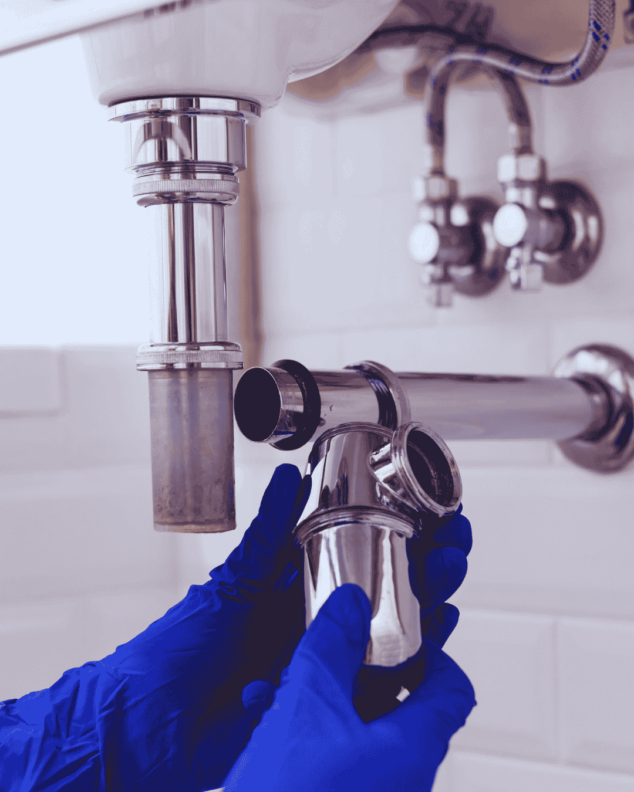
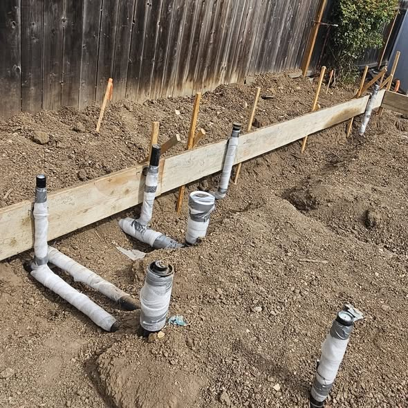
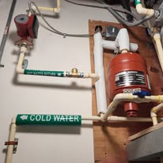
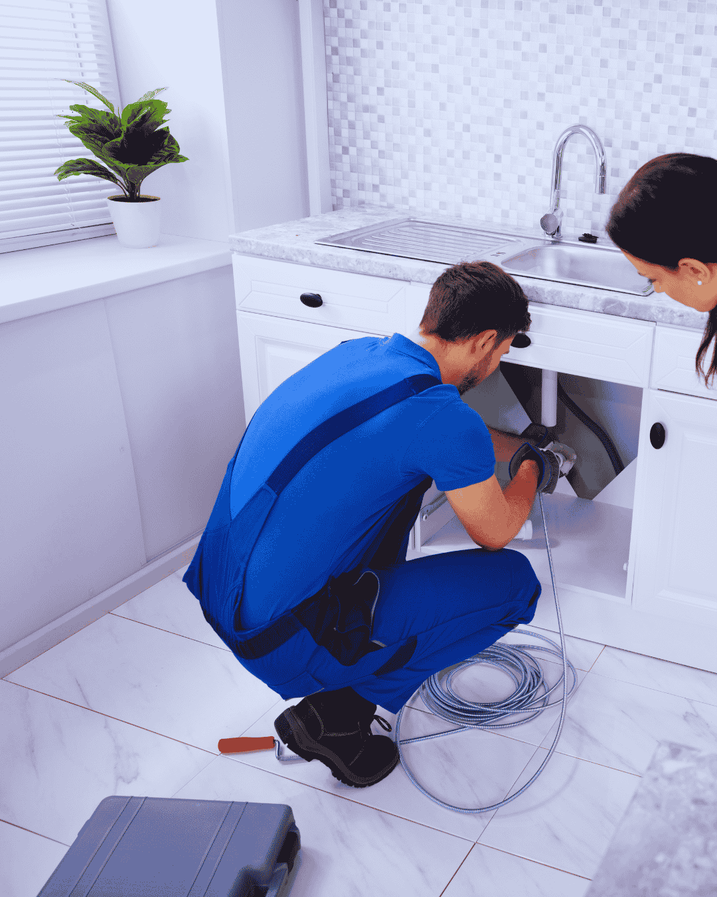
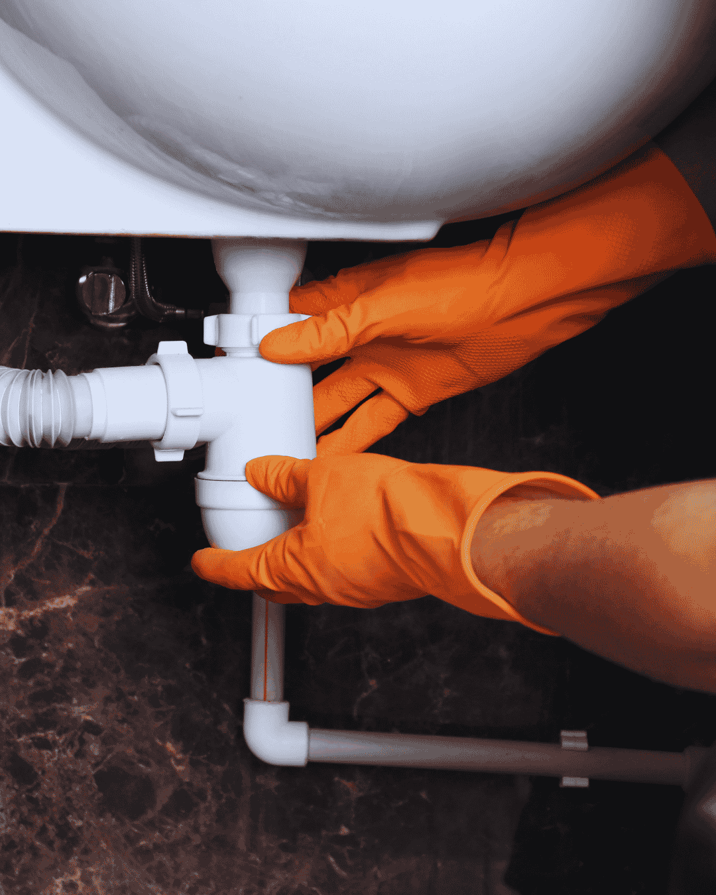
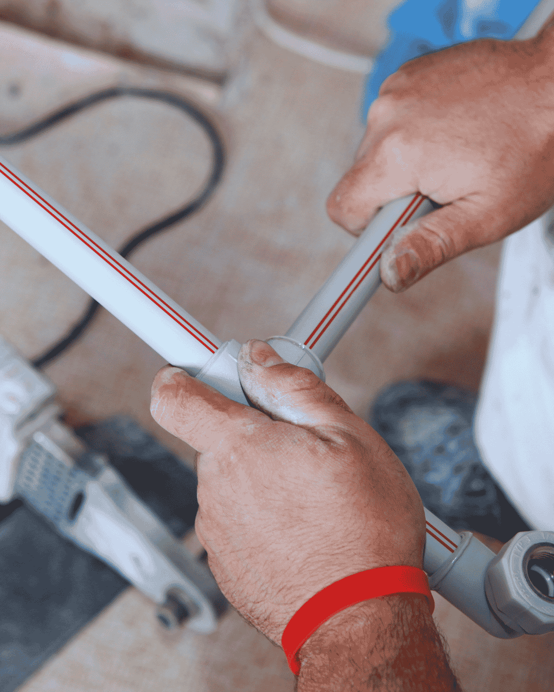
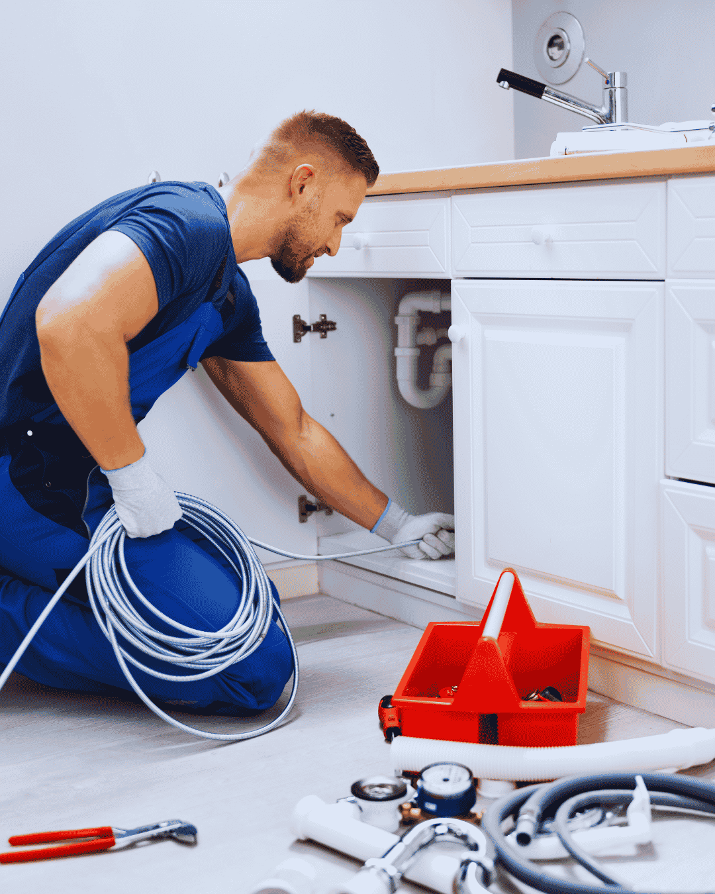
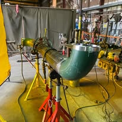
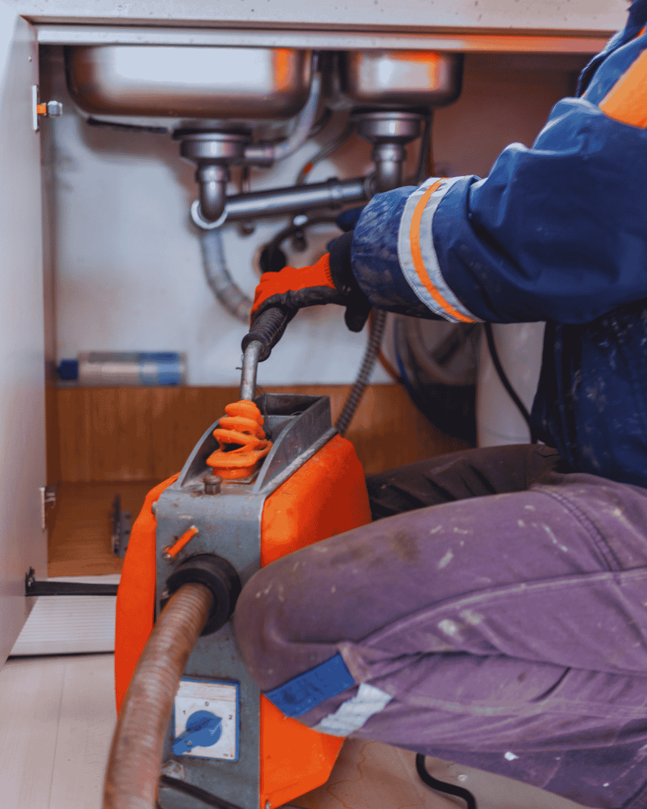

Home › Blog
Plumbing Advice for Boynton Beach Homeowners
Practical guides on cost, repair versus replacement, and the plumbing problems specific to South Florida homes.
Latest guides
Plumbing Guides for Boynton Beach and Palm Beach County
Every guide below is written for South Florida homes rather than generic advice. If you want the short version instead, the service pages cover the same ground: drain cleaning, repiping and water heater repair.

November 7, 2026
How to Shut Off the Water in a Boynton Beach Home
Find it today. You do not want to be looking for it during a burst.
Read the article →
November 7, 2026
Why Your Water Bill Suddenly Doubled
Most of the time it is one of five things, and two of them are cheap.
Read the article →
November 6, 2026
The Water Meter Test That Confirms a Hidden Leak
Two hours, no tools and no cost. It is the test worth running first.
Read the article →November 6, 2026
Signs of a Slab Leak in a Florida Home
A warm patch on the floor is the sign most people notice first.
Read the article →November 5, 2026
Tree Roots in a Sewer Line: Signs and Real Fixes
Roots do not break into sound pipe. They follow a leak that is already there.
Read the article →
November 5, 2026
Cast Iron Drain Pipe in Older Florida Homes
It fails from the inside, which is why you rarely see it coming.
Read the article →November 4, 2026
What a Sewer Camera Inspection Actually Shows
Footage turns a guess into a decision. Here is how to read it.
Read the article →
November 4, 2026
Main Line Backup: What to Do in the First Ten Minutes
Stop using water. Everything else can wait until the truck arrives.
Read the article →November 3, 2026
Why Drains Keep Clogging in Boynton Beach Homes
A drain that clears and blocks again is not a user problem. It is usually the pipe.
Read the article →
November 3, 2026
Hydro Jetting vs Snaking: Which Does Your Line Need?
One punches a hole through the blockage. The other restores the full pipe diameter.
Read the article →
August 18, 2026
What Drain Cleaning Costs in Boynton Beach, and What Drives the Price
A plain breakdown of drain cleaning costs in Boynton Beach, FL, from a simple sink clog to hydro jetting a main line. For what the job actually involves rather than what it costs, see drain cleaning, or sewer line repair if the camera has already found a break. Both are covered across our service areas.
Read the article →
August 4, 2026
Seven Signs Your Palm Beach County Home Needs a Repipe
How to tell whether your home needs a whole-house repipe, what materials to choose, and what the job actually involves. If several of these sound familiar, repiping and pipe repair explains the options, and leak detection covers how the failures get found. Both run across Boynton Beach and nearby cities.
Read the article →
July 21, 2026
No Hot Water? A Boynton Beach Homeowner Checklist Before You Call
Six things to check before calling a plumber about a water heater, and the three symptoms that mean stop and call now. If the checklist does not solve it, water heater repair covers what happens next, and tankless installation is worth reading if the tank is finished. Both are available across our service areas.
Read the article →Why we publish this
Plumbing Guides Written for South Florida Homes
Most plumbing advice online is written for houses with basements, cold winters and soft water. None of that describes Boynton Beach. Our articles are written around the conditions that actually cause failures here, so the advice applies to your home rather than a generic one.
What we cover
Cost breakdowns. What drives the price of a repair, so you can tell a fair quote from a padded one. Drain cleaning, water heater replacement and sewer work all have a small number of real cost drivers, and knowing them puts you on level ground with any contractor.
Repair or replace decisions. The point at which patching stops making sense. This matters most on water heaters, cast iron drains and aging copper, where a repair can be the right answer one year and the wrong answer the next.
Troubleshooting you can do safely. Checks that take ten minutes and sometimes save the cost of a call, such as the water meter test for hidden leaks or the reset button on an electric water heater. We are clear about where safe troubleshooting ends and licensed work begins.
Local conditions. Hard water at 8 to 12 grains per gallon, slab construction with no basement, a shallow water table, cast iron drains in pre-1980 homes, and salt air on the coast. These four factors explain most of the plumbing work in this city.
What we do not do
We do not publish instructions for gas work, sewer work or anything involving the electrical side of a water heater. Those are licensed for good reason, and no article should encourage otherwise.
Popular topics
Plumbing Topics Boynton Beach Homeowners Search For
Clogged drains and main line backups
Why cabling and hydro jetting are different jobs, when a camera inspection is worth paying for, and how to tell a fixture clog from a failing sewer lateral. Includes the habits that cause most repeat clogs in local kitchens.
Water heaters and hard water
How local mineral content shortens tank life from twelve years to about eight, what annual flushing and anode rod replacement actually do, and the age at which replacement becomes the cheaper decision.
Slab leaks and hidden water leaks
The meter test that confirms a leak in ten minutes, the symptoms specific to slab leaks in Florida homes, and why rerouting a line overhead is often cheaper than opening the floor once flooring is priced in.
How to Use These Guides
Read the cost articles before you collect quotes. Knowing the three or four things that genuinely change a price makes it obvious when a number has been padded, and it makes an honest quote easier to recognize. Read the troubleshooting articles before you book, because a handful of problems really do resolve with a breaker, a reset button or a cleared aerator.
Read the repair-versus-replace articles when a contractor has recommended replacement. If the reasoning in the article matches the reasoning you were given, that is a good sign. If it does not, ask the questions the article raises before approving the work.
Anything involving gas, sewer lines or electrical connections should go to a licensed plumber regardless of what you read here. If you are unsure which category your problem falls into, call (833) 567-2788 and ask. We will tell you plainly whether it needs a visit.
Rather just ask a plumber?
Call and describe the problem. You get a straight answer and a price range on the same call.